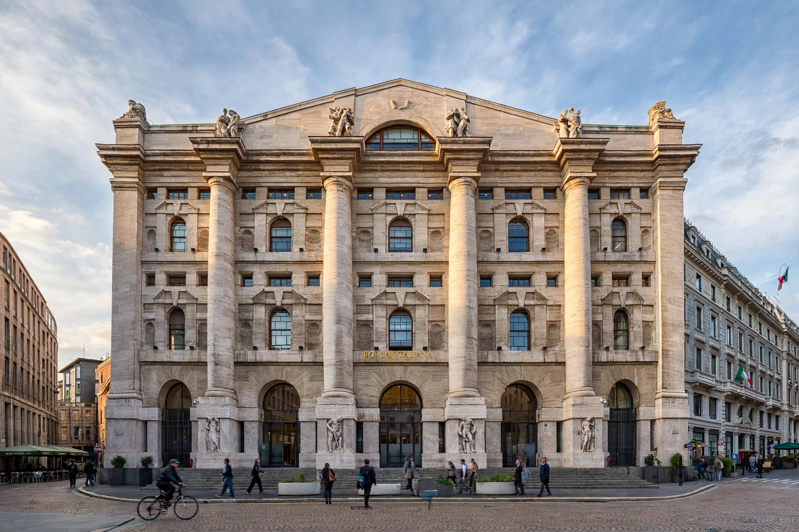

Borsa Italiana S.p.A. is Italy's main stock exchange, based in Palazzo Mezzanotte in Milan. Founded in 1808, it was privatised in 1997, was part of London Stock Exchange Group from 2007, and was acquired by Euronext in 2021.
| Borsa Italiana | |
|---|---|
 | |
| Location | Milan, Italy |
| Founded | 1808 |
| Owner | Euronext |
| Key index | FTSE MIB |
It operates the main equity market (Euronext Milan), Euronext Growth Milan for SMEs, bond market MOT, derivatives market IDEM, and ETFplus. The benchmark index is the FTSE MIB of 40 blue-chip stocks.